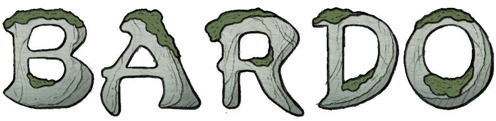
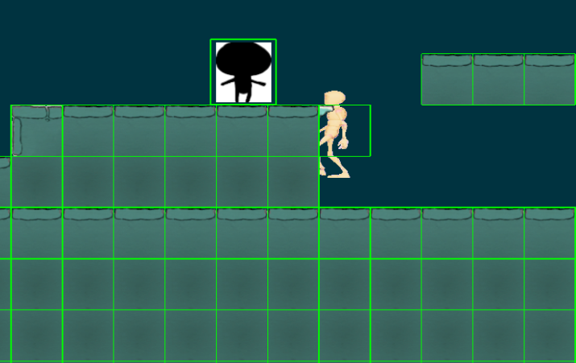
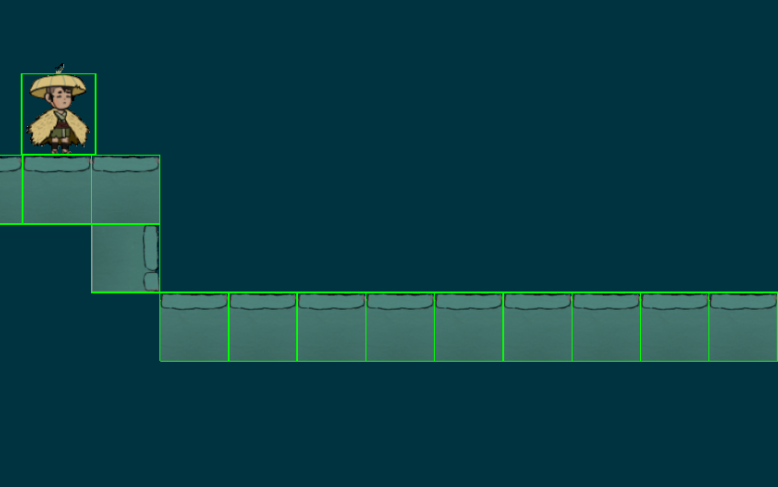
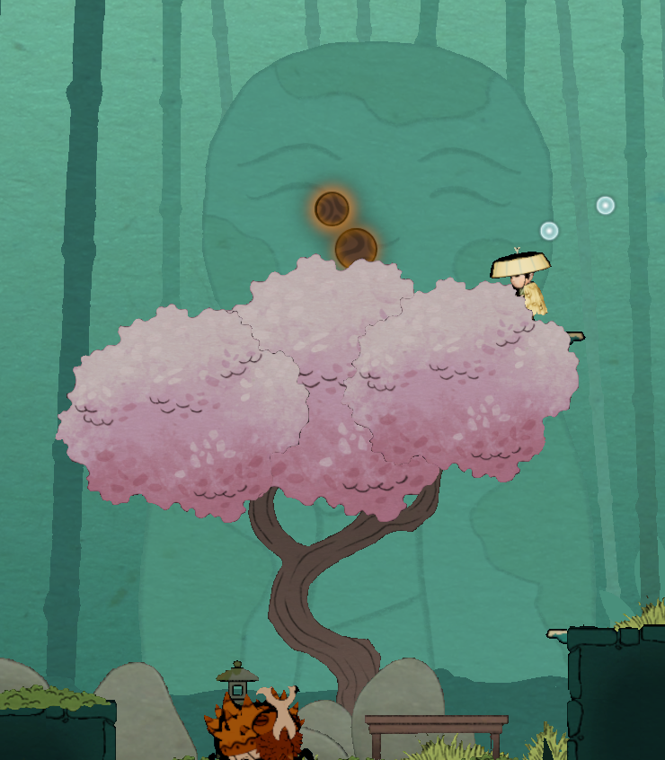
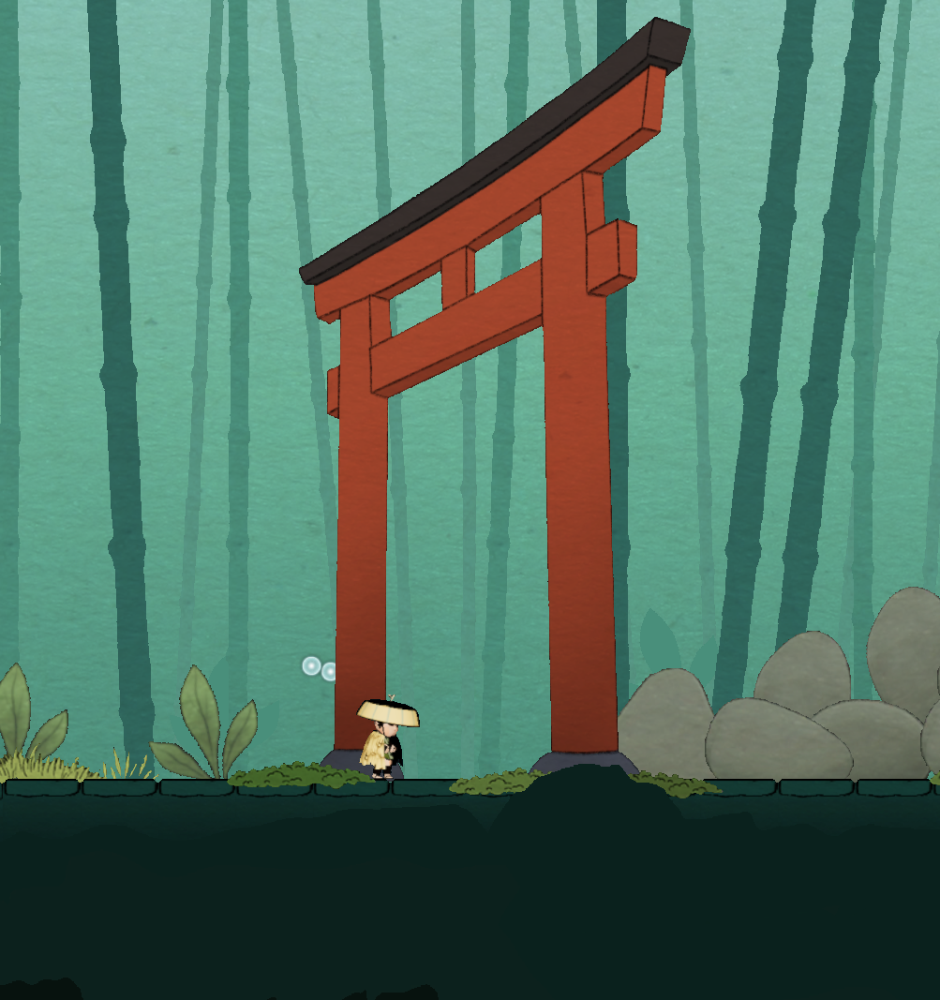
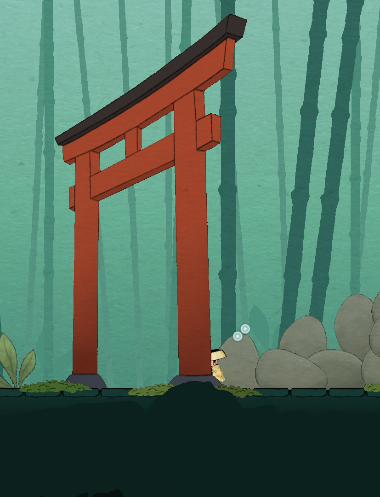

Project 3 – Bardo
- Reference game
- Sheepy
- Genre
- Platformer
- Duration
- 12 weeks (half time)
- Team size
- 14
- Engine
- TGA Engine (C++, DX11)
Summary
This project was made in TGA’s custom engine. The project specification stated that it should be a platformer game. We chose to make it 2D and focus more on environmental storytelling.
This was the first full game we built in TGA’s custom engine, so we had to create our own workflow since the engine doesn’t have a built-in editor. We used Unity as an editor and exported the game as JSON data, which was then loaded into the engine.
Contributions
Unity JSON exporter / Import pipeline
For this project, I worked mostly with Unity and the JSON exporter during the first half of the project.
During the early phase, I set up a workflow so that level designers could use Unity’s tilemap system to build levels, which would then be exported and loaded into the engine with a level loader.
We were given a very basic JSON exporter that only provided simple data like transforms. For the tile system, I had to modify it so we could extract data from the tiles in the grid and not just the grid object.
Collision Optimization

Initially, all tiles were given a box collider when loaded into the engine. It worked, but it was not optimal because our collision system had to check many objects within a certain radius of the player every frame.

I changed it so only interactable objects were given a collider. This improved performance since the system no longer had to check tiles that were unreachable.
Render pipeline




During the project, I also worked with the render pipeline.
Even though the game was 2D, we still wanted a sense of depth. This meant we needed both foreground and background objects.
This was where I learned how the render pipeline handles transparent objects and why they need to be drawn in a specific order. During development, we had issues where objects would clip through each other.
We solved this by sorting objects and rendering them in a specific order, as well as placing objects in layers so they wouldn’t render on the same layer and cause clipping issues.
During render passes, we also disabled certain stages depending on what was being rendered.
In-game effects and gameplay

In the later stages of development, we wanted to show the player control information when they unlocked a new ability, instead of using a menu or UI panel.
I worked on implementing transparent popups that displayed which buttons to press, making the information part of the gameplay instead of separate UI.
I also made falling platforms, where the level designers could set the time before the fall in Unity.
Conclusion
This project gave me a better understanding of how much work happens behind the scenes to create a beautiful and enjoyable game. I learned how a render pipeline works in practice, and how many different disciplines need to work together to make everything come together.
Working with a custom engine without an editor also showed me how many workarounds or new implementations are needed when using another engine as an editor. It also showed me the importance of making good tools and pipelines to make the development run smooth.